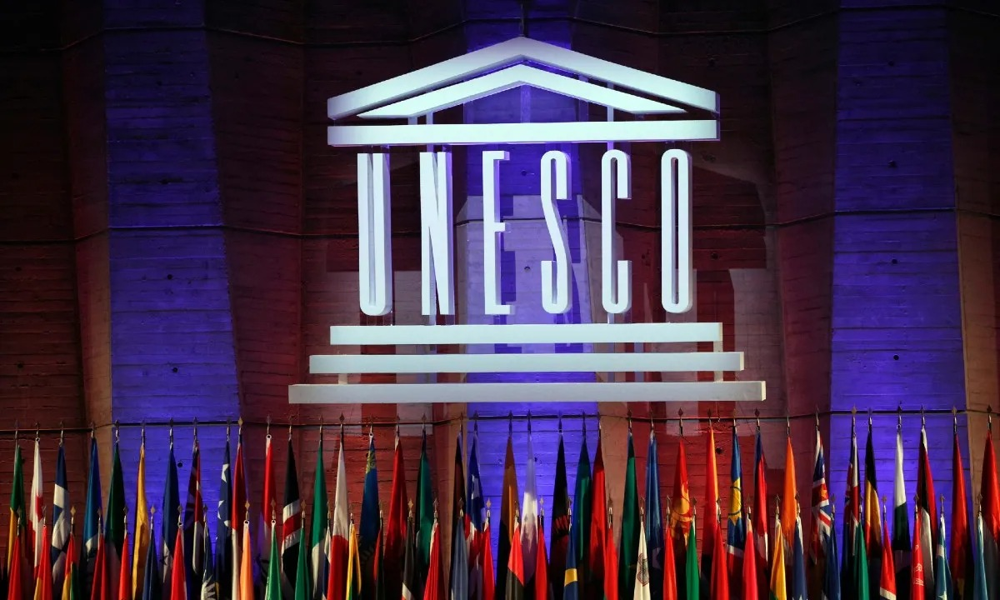

Construir la paz en la mente de los hombres y las mujeres
El preámbulo de la Constitución de la UNESCO proclama que "ya que las guerras tienen su origen en la mente de las personas, es en la mente de las personas donde se deben construir los cimientos de la paz". La creación de la UNESCO en 1945 respondió a la sólida creencia de las naciones, forjada por dos guerras mundiales en menos de una generación, de que los acuerdos políticos y económicos no son suficientes para edificar una paz duradera. La paz debe cimentarse en los valores morales de la humanidad y la solidaridad intelectual.
Desafíos Mundiales y Tolerancia Social
En un mundo marcado por crecientes desafíos como la desigualdad, la exclusión, la violencia y el sectarismo, se ha observado un aumento de la intolerancia social. Esto ha llevado a una mayor distancia entre las personas.
La UNESCO tiene como misión fundamental acompañar a las naciones en el conocimiento mutuo y el trabajo conjunto para construir una paz duradera. Esta labor se ha convertido en un componente esencial para crear un mundo más seguro que valore la diversidad y las generaciones futuras.
La UNESCO promueve la paz a través de la educación, las ciencias, la cultura y la comunicación. Este enfoque se integra en todas las áreas de competencia de la organización. El concepto de "cultura de paz" surgió en 1989 durante el Congreso Internacional de la UNESCO sobre la Paz en la Mente de los Hombres en Yamusukro, Côte d'Ivoire. La UNESCO reconoció que la paz va más allá del simple cese de conflictos armados. A través del aprendizaje y la comprensión, las personas adquieren las competencias interculturales necesarias para apreciar la diversidad y abordar conflictos en base a valores de pluralismo y entendimiento mutuo.
Iniciativas y Enfoque de la UNESCO para la Paz y la Tolerancia
A través del aprendizaje y la comprensión, las personas adquieren competencias interculturales necesarias para apreciar la diversidad y resolver conflictos basándose en valores de pluralismo y entendimiento mutuo. En este sentido, la UNESCO ha desarrollado programas destinados a educar sobre la diversidad, comprender lo desconocido y promover la cooperación en la sociedad. En 1989, la UNESCO estableció el Premio de Fomento de la Paz Félix Houphouët-Boigny, con el propósito de reconocer a individuos, instituciones u organizaciones que han contribuido significativamente a la promoción, búsqueda, salvaguardia o mantenimiento de la paz. La educación desempeña un papel fundamental en fomentar la aceptación y el respeto hacia todas las personas, independientemente de su color de piel, género o identidad. En línea con esta idea, se lanzó en 2012 el proyecto "Enseñar a respetar a todos". Además, la cultura de paz, que evolucionó y sigue siendo relevante en el siglo XXI, fue celebrada por la UNESCO y Côte d'Ivoire en el 25 aniversario de su concepción en 2014. En este evento, se evaluaron los avances realizados y se exploraron direcciones futuras. Asimismo, se planea la organización de un foro panafricano sobre la cultura de paz en África. La Directora General de la UNESCO subraya que la paz trasciende la mera ausencia de guerras, y se basa en vivir en armonía respetando las diferencias, promoviendo la justicia y los derechos humanos como pilares fundamentales de la coexistencia.